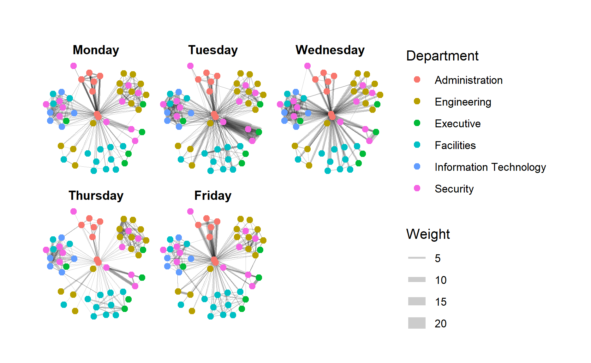
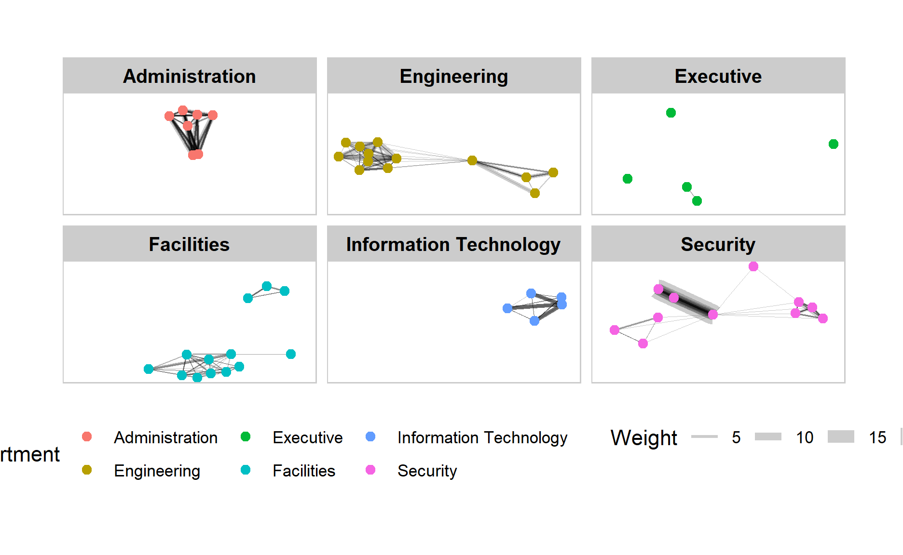
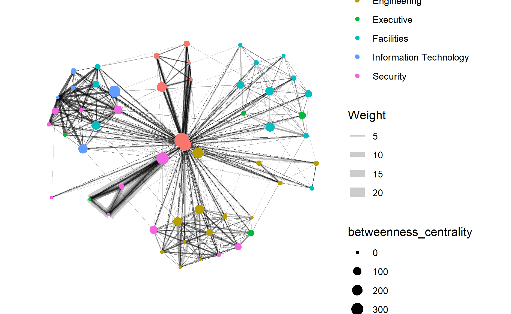

Install and Lauch R Packages
packages = c('igraph', 'tidygraph',
'ggraph', 'visNetwork',
'lubridate', 'clock',
'tidyverse')
for(p in packages){
if(!require(p, character.only = T)){
install.packages(p)
}
library(p, character.only = T)
}
Import Network Data
Import GAStech_email_node.csv and GAStech_email_edges.csv into RStudio environment by using read_csv() of readr package
GAStech_nodes <- read_csv("data/GAStech_email_node.csv")
GAStech_edges <- read_csv("data/GAStech_email_edge-v2.csv")
Review Imported Data
glimpse(GAStech_edges)
Rows: 9,063
Columns: 8
$ source <dbl> 43, 43, 44, 44, 44, 44, 44, 44, 44, 44, 44, 44, ~
$ target <dbl> 41, 40, 51, 52, 53, 45, 44, 46, 48, 49, 47, 54, ~
$ SentDate <chr> "6/1/2014", "6/1/2014", "6/1/2014", "6/1/2014", ~
$ SentTime <time> 08:39:00, 08:39:00, 08:58:00, 08:58:00, 08:58:0~
$ Subject <chr> "GT-SeismicProcessorPro Bug Report", "GT-Seismic~
$ MainSubject <chr> "Work related", "Work related", "Work related", ~
$ sourceLabel <chr> "Sven.Flecha", "Sven.Flecha", "Kanon.Herrero", "~
$ targetLabel <chr> "Isak.Baza", "Lucas.Alcazar", "Felix.Resumir", "~From the output report of GAStech_edges, SentDate is treated as “Characterâ€" data type instead of date data type. The data type of SentDate field needs to change back to “Date†data type.
Data Wrangling
GAStech_edges$SentDate = dmy(GAStech_edges$SentDate)
GAStech_edges$Weekday = wday(GAStech_edges$SentDate,
label = TRUE,
abbr = FALSE)
both dmy() and wday() are functions of lubridate package. lubridate is an R package that makes it easier to work with dates and times.
dmy() transforms the SentDate to Date data type.
wday() returns the day of the week as a decimal number or an ordered factor if label is TRUE. The argument abbr is FALSE keep the daya spells in full, i.e. Monday. The function will create a new column in the data.frame i.e. Weekday and the output of wday() will save in this newly created field.
the values in the Weekday field are in ordinal scale.
Review Revised Date Fields
glimpse(GAStech_edges)
Rows: 9,063
Columns: 9
$ source <dbl> 43, 43, 44, 44, 44, 44, 44, 44, 44, 44, 44, 44, ~
$ target <dbl> 41, 40, 51, 52, 53, 45, 44, 46, 48, 49, 47, 54, ~
$ SentDate <date> 2014-01-06, 2014-01-06, 2014-01-06, 2014-01-06,~
$ SentTime <time> 08:39:00, 08:39:00, 08:58:00, 08:58:00, 08:58:0~
$ Subject <chr> "GT-SeismicProcessorPro Bug Report", "GT-Seismic~
$ MainSubject <chr> "Work related", "Work related", "Work related", ~
$ sourceLabel <chr> "Sven.Flecha", "Sven.Flecha", "Kanon.Herrero", "~
$ targetLabel <chr> "Isak.Baza", "Lucas.Alcazar", "Felix.Resumir", "~
$ Weekday <ord> Monday, Monday, Monday, Monday, Monday, Monday, ~Wrangling Attributes
GAStech_edges data.frame consists of individual e-mail flow records, need to aggregate the individual by date, senders, receivers, main subject and day of the week
four functions from dplyr package are used. They are: filter(), group(), summarise(), and ungroup().
The output data.frame is called GAStech_edges_aggregated.
A new field called Weight has been added in GAStech_edges_aggregated.
Review Revised Edges Files
glimpse(GAStech_edges_aggregated)
Rows: 1,456
Columns: 4
$ source <dbl> 1, 1, 1, 1, 1, 1, 1, 1, 1, 1, 1, 1, 1, 1, 1, 1, 1, 1~
$ target <dbl> 2, 2, 2, 2, 3, 3, 3, 3, 4, 4, 4, 4, 5, 5, 5, 5, 6, 6~
$ Weekday <ord> Monday, Tuesday, Wednesday, Friday, Monday, Tuesday,~
$ Weight <int> 4, 3, 5, 8, 4, 3, 5, 8, 4, 3, 5, 8, 4, 3, 5, 8, 4, 3~Using tbl_graph() to build tidygraph data model.
Use tbl_graph() of tinygraph package to build an tidygraph’s network graph data.frame. Check the reference guide of tbl_graph() here
GAStech_graph <- tbl_graph(nodes = GAStech_nodes,
edges = GAStech_edges_aggregated,
directed = TRUE)
Review tidygraph’s graph object
GAStech_graph
# A tbl_graph: 54 nodes and 1456 edges
#
# A directed multigraph with 1 component
#
# Node Data: 54 x 4 (active)
id label Department Title
<dbl> <chr> <chr> <chr>
1 1 Mat.Bramar Administration Assistant to CEO
2 2 Anda.Ribera Administration Assistant to CFO
3 3 Rachel.Pantanal Administration Assistant to CIO
4 4 Linda.Lagos Administration Assistant to COO
5 5 Ruscella.Mies.H~ Administration Assistant to Engineering Grou~
6 6 Carla.Forluniau Administration Assistant to IT Group Manager
# ... with 48 more rows
#
# Edge Data: 1,456 x 4
from to Weekday Weight
<int> <int> <ord> <int>
1 1 2 Monday 4
2 1 2 Tuesday 3
3 1 2 Wednesday 5
# ... with 1,453 more rowsThe output above reveals that GAStech_graph is a tbl_graph object with 54 nodes and 1456 edges.
The command also prints the first six rows of “Node Data†and the first three of “Edge Dataâ€.
It states that the Node Data is active. The notion of an active tibble within a tbl_graph object makes it possible to manipulate the data in one tibble at a time.
Change Active Object
GAStech_graph %>%
activate(edges) %>%
arrange(desc(Weight))
# A tbl_graph: 54 nodes and 1456 edges
#
# A directed multigraph with 1 component
#
# Edge Data: 1,456 x 4 (active)
from to Weekday Weight
<int> <int> <ord> <int>
1 40 41 Tuesday 23
2 40 43 Tuesday 19
3 41 43 Tuesday 15
4 41 40 Tuesday 14
5 42 41 Tuesday 13
6 42 40 Tuesday 12
# ... with 1,450 more rows
#
# Node Data: 54 x 4
id label Department Title
<dbl> <chr> <chr> <chr>
1 1 Mat.Bramar Administration Assistant to CEO
2 2 Anda.Ribera Administration Assistant to CFO
3 3 Rachel.Pantanal Administration Assistant to CIO
# ... with 51 more rowsThe nodes tibble data frame is activated by default, but you can change which tibble data frame is active with the activate() function. Thus, if we wanted to rearrange the rows in the edges tibble to list those with the highest “weight†first, we could use activate() and then arrange().
Check the reference guide of activate() here.
Plot Basic Network Graph
The code chunk below uses ggraph(), geom-edge_link() and geom_node_point() to plot a network graph by using GAStech_graph.
ggraph(GAStech_graph) +
geom_edge_link() +
geom_node_point()

The basic plotting function is ggraph(), which takes the data to be used for the graph and the type of layout desired. Both of the arguments for ggraph() are built around igraph. Therefore, ggraph() can use either an igraph object or a tbl_graph object.
Change Default Network Graph Theme
g <- ggraph(GAStech_graph) +
geom_edge_link(aes()) +
geom_node_point(aes())
g + theme_graph()

ggraph introduces a special ggplot theme that provides better defaults for network graphs than the normal ggplot defaults. theme_graph(), besides removing axes, grids, and border, changes the font to Arial Narrow (this can be overridden).
The ggraph theme can be set for a series of plots with the set_graph_style() command run before the graphs are plotted or by using theme_graph() in the individual plots.
Change Color of the Plot
g <- ggraph(GAStech_graph) +
geom_edge_link(aes(colour = 'grey50')) +
geom_node_point(aes(colour = 'grey40'))
g + theme_graph(background = 'grey10',
text_colour = 'white')

Fruchterman and Reingold Layout
g <- ggraph(GAStech_graph,
layout = "fr") +
geom_edge_link(aes()) +
geom_node_point(aes())
g + theme_graph()

- layout argument is used to define the layout to be used.
Modify Network Nodes
Colour each node by referring to their respective departments.
g <- ggraph(GAStech_graph,
layout = "nicely") +
geom_edge_link(aes()) +
geom_node_point(aes(colour = Department,
size = 3))
g + theme_graph()

- geom_node_point is equivalent in functionality to geo_point of ggplot2. It allows for simple plotting of nodes in different shapes, colours and sizes.
Modify Network Edges
The thickness of the edges will be mapped with the Weight variable.
g <- ggraph(GAStech_graph,
layout = "nicely") +
geom_edge_link(aes(width=Weight),
alpha=0.2) +
scale_edge_width(range = c(0.1, 5)) +
geom_node_point(aes(colour = Department),
size = 3)
g + theme_graph()

- geom_edge_link draws edges in the simplest way - as straight lines between the start and end nodes. But, it can do more that that. In the example above, argument width is used to map the width of the line in proportional to the Weight attribute and argument alpha is used to introduce opacity on the line.
Working with facet_edges()
In the code chunk below, facet_edges() is used.
set_graph_style()
g <- ggraph(GAStech_graph,
layout = "nicely") +
geom_edge_link(aes(width=Weight),
alpha=0.2) +
scale_edge_width(range = c(0.1, 5)) +
geom_node_point(aes(colour = Department),
size = 2)
g + facet_edges(~Weekday)

The code chunk below uses theme() to change the position of the legend.
set_graph_style()
g <- ggraph(GAStech_graph,
layout = "nicely") +
geom_edge_link(aes(width=Weight),
alpha=0.2) +
scale_edge_width(range = c(0.1, 5)) +
geom_node_point(aes(colour = Department),
size = 2) +
theme(legend.position = 'bottom')
g + facet_edges(~Weekday)

Add frame to each graph
g <- ggraph(GAStech_graph,
layout = "nicely") +
geom_edge_link(aes(width=Weight),
alpha=0.2) +
scale_edge_width(range = c(0.1, 5)) +
geom_node_point(aes(colour = Department),
size = 2)
g + facet_edges(~Weekday) +
th_foreground(foreground = "grey80",
border = TRUE) +
theme(legend.position = 'bottom')

Working with facet_nodes()
In the code chunck below, facet_nodes() is used
set_graph_style()
g <- ggraph(GAStech_graph,
layout = "nicely") +
geom_edge_link(aes(width=Weight),
alpha=0.2) +
scale_edge_width(range = c(0.1, 5)) +
geom_node_point(aes(colour = Department),
size = 2)
g + facet_nodes(~Department)+
th_foreground(foreground = "grey80",
border = TRUE) +
theme(legend.position = 'bottom')

Computing centrality indices
Centrality measures are a collection of statistical indices use to describe the relative important of the actors are to a network. There are four well-known centrality measures, namely: degree, betweenness, closeness and eigenvector.
g <- GAStech_graph %>%
mutate(betweenness_centrality = centrality_betweenness()) %>%
ggraph(layout = "fr") +
geom_edge_link(aes(width=Weight),
alpha=0.2) +
scale_edge_width(range = c(0.1, 5)) +
geom_node_point(aes(colour = Department,
size=betweenness_centrality))
g + theme_graph()

mutate() of dplyr is used to perform the computation.
the algorithm used, on the other hand, is the centrality_betweenness() of tidygraph.
Visualising network metrics
From ggraph v2.0 onwards tidygraph algorithms such as centrality measures can be accessed directly in ggraph calls. This means that it is no longer necessary to precompute and store derived node and edge centrality measures on the graph in order to use them in a plot.
g <- GAStech_graph %>%
ggraph(layout = "fr") +
geom_edge_link(aes(width=Weight),
alpha=0.2) +
scale_edge_width(range = c(0.1, 5)) +
geom_node_point(aes(colour = Department,
size = centrality_betweenness()))
g + theme_graph()

Visualising Community
tidygraph package inherits many of the community detection algorithms imbedded into igraph and makes them available to us, including Edge-betweenness (group_edge_betweenness), Leading eigenvector (group_leading_eigen), Fast-greedy (group_fast_greedy), Louvain (group_louvain), Walktrap (group_walktrap), Label propagation (group_label_prop), InfoMAP (group_infomap), Spinglass (group_spinglass), and Optimal (group_optimal). Some community algorithms are designed to take into account direction or weight, while others ignore it. Use this link to find out more about community detection functions provided by tidygraph.
g <- GAStech_graph %>%
mutate(community = as.factor(group_edge_betweenness(weights = Weight, directed = TRUE))) %>%
ggraph(layout = "fr") +
geom_edge_link(aes(width=Weight),
alpha=0.2) +
scale_edge_width(range = c(0.1, 5)) +
geom_node_point(aes(colour = community))
g + theme_graph()

Interactive Network Graph with visNetwork
Data Preparation
GAStech_edges_aggregated <- GAStech_edges %>%
left_join(GAStech_nodes, by = c("sourceLabel" = "label")) %>%
rename(from = id) %>%
left_join(GAStech_nodes, by = c("targetLabel" = "label")) %>%
rename(to = id) %>%
filter(MainSubject == "Work related") %>%
group_by(from, to) %>%
summarise(weight = n()) %>%
filter(from!=to) %>%
filter(weight > 1) %>%
ungroup()
- visNetwork() function uses a nodes list and edges list to create an interactive graph.
- The nodes list must include an “id†column, and the edge list must have “from†and “to†columns.
- The function also plots the labels for the nodes, using the names of the actors from the “label†column in the node list.
Plotting the first interactive network graph
visNetwork(GAStech_nodes,
GAStech_edges_aggregated)
Working with layout
In the code chunk below, Fruchterman and Reingold layout is used.
visNetwork(GAStech_nodes,
GAStech_edges_aggregated) %>%
visIgraphLayout(layout = "layout_with_fr")
Working with visual attributes - Nodes
visNetwork() looks for a field called “group†in the nodes object and colour the nodes according to the values of the group field.
The code chunk below rename Department field to group.
GAStech_nodes <- GAStech_nodes %>%
rename(group = Department)
When we rerun the code chunk below, visNetwork shades the nodes by assigning unique colour to each category in the group field.
visNetwork(GAStech_nodes,
GAStech_edges_aggregated) %>%
visIgraphLayout(layout = "layout_with_fr") %>%
visLegend() %>%
visLayout(randomSeed = 123)
In the code run below visEdges() is used to symbolise the edges.
* The argument arrows is used to define where to place the arrow.
* The smooth argument is used to plot the edges using a smooth curve
visNetwork(GAStech_nodes,
GAStech_edges_aggregated) %>%
visIgraphLayout(layout = "layout_with_fr") %>%
visEdges(arrows = "to",
smooth = list(enabled = TRUE,
type = "curvedCW")) %>%
visLegend() %>%
visLayout(randomSeed = 123)
Interactivity
In the code chunk below, visOptions() is used to incorporate interactivity features in the data visualisation.
* The argument highlightNearest highlights nearest when clicking a node.
* The argument nodesIdSelection adds an id node selection creating an HTML select element.
visNetwork(GAStech_nodes,
GAStech_edges_aggregated) %>%
visIgraphLayout(layout = "layout_with_fr") %>%
visOptions(highlightNearest = TRUE,
nodesIdSelection = TRUE) %>%
visLegend() %>%
visLayout(randomSeed = 123)
Bipartitle Network
Transform a transaction data set into a network graph by using tidygraph. The data we are going to use is the cc_data.csv data from VAST Challenge 2021: Mini-Challenge 2
Import Data
Parse the data into R Studio by using read_csv()
cc_data <- read_csv("data/cc_data.csv")
Review imported tibble data.frame
glimpse(cc_data)
Rows: 1,490
Columns: 4
$ timestamp <chr> "01/06/2014 07:28", "01/06/2014 07:34", "01/06/20~
$ location <chr> "Brew've Been Served", "Hallowed Grounds", "Brew'~
$ price <dbl> 11.34, 52.22, 8.33, 16.72, 4.24, 4.17, 28.73, 9.6~
$ last4ccnum <dbl> 4795, 7108, 6816, 9617, 7384, 5368, 7253, 4948, 9~Notice that the timestamp field is in character format and not in date-time format.
Transform Data
- Transform values in timestamp field into correct date-time format
- Transform values in last4ccnum field to character data type
- Derive a day-of-month field from timestamp
- Derive a hour-of-day field from timestamp
cc_data$timestamp <- date_time_parse(cc_data$timestamp,
zone = "",
format = "%m/%d/%Y %H:%M")
cc_data$last4ccnum <- as.character(cc_data$last4ccnum)
cc_data$Day = get_day(cc_data$timestamp)
cc_data$Hour = get_hour(cc_data$timestamp)
Create Nodes List
- Get the distinct card users from the “last4ccnum†column.
- Rename the column with the “last4ccnum†as “label†to adopt the vocabulary used by network analysis packages.
- Repeat the same steps for “location†column.
- Join both the sources and destinations data frame
sources <- cc_data %>%
distinct(last4ccnum) %>%
rename(label = last4ccnum)
destinations <- cc_data %>%
distinct(location) %>%
rename(label = location)
To create a single dataframe with a column with the unique users and locations, full_join() is used. T This is because we want to include all unique places from both the sources and the destinations of ccdata.
cc_nodes <- full_join(sources,
destinations,
by = "label")
Use rowid_to_column() to add an “id†column to the nodes data frame
cc_nodes <- cc_nodes %>%
rowid_to_column("id")
Create Edges List
To create an edge list, we need to deal with two ID columns instead of one. We also want to create a weight column that will note the amount of letters sent between each set of nodes.
edges <- cc_data %>%
group_by(last4ccnum, location, Day, Hour) %>%
summarise(weight = n()) %>%
ungroup()
edges
# A tibble: 1,490 x 5
last4ccnum location Day Hour weight
<chr> <chr> <int> <int> <int>
1 1286 Abila Zacharo 6 13 1
2 1286 Abila Zacharo 9 13 1
3 1286 Abila Zacharo 13 13 1
4 1286 Abila Zacharo 16 13 1
5 1286 Ahaggo Museum 18 14 1
6 1286 Brew've Been Served 6 8 1
7 1286 Brew've Been Served 7 7 1
8 1286 Brew've Been Served 8 8 1
9 1286 Brew've Been Served 9 8 1
10 1286 Brew've Been Served 10 8 1
# ... with 1,480 more rowsTidy Edges List
Like the node list, cc_edges now has the basic form that we want, but we again have the problem that the “source†and “destination†columns contain labels rather than IDs.
Reorder the columns to bring “from†and “to†to the left of the data frame
cc_edges <- select(cc_edges, from, to,
Day, Hour, weight)
cc_edges
# A tibble: 1,490 x 5
from to Day Hour weight
<int> <int> <int> <int> <int>
1 27 71 6 13 1
2 27 71 9 13 1
3 27 71 13 13 1
4 27 71 16 13 1
5 27 87 18 14 1
6 27 56 6 8 1
7 27 56 7 7 1
8 27 56 8 8 1
9 27 56 9 8 1
10 27 56 10 8 1
# ... with 1,480 more rowsBuilding tidygraph network graph data object
tbl_graph() of tidygraph package is used to build a network object by using a node list and an edge list.
cc_graph <- tbl_graph(nodes = cc_nodes,
edges = cc_edges,
directed = FALSE)
cc_graph
# A tbl_graph: 89 nodes and 1490 edges
#
# An undirected multigraph with 1 component
#
# Node Data: 89 x 2 (active)
id label
<int> <chr>
1 1 4795
2 2 7108
3 3 6816
4 4 9617
5 5 7384
6 6 5368
# ... with 83 more rows
#
# Edge Data: 1,490 x 5
from to Day Hour weight
<int> <int> <int> <int> <int>
1 27 71 6 13 1
2 27 71 9 13 1
3 27 71 13 13 1
# ... with 1,487 more rowsVisualising the network
Network graph created by using cc_graph network object
ggraph(cc_graph,
layout = "lgl") +
geom_edge_link(aes()) +
geom_node_point(aes()) +
theme_graph()

Reference: